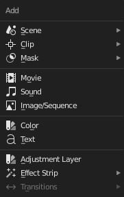

简介¶
片段是一个容器，它承载由一个或多个源(输入)提供的帧。它由一个 起始帧 和一个 长度 定义，并显示为一个彩色的水平矩形。

片段示意图。¶
添加片段¶
参考
- 菜单
- 快捷键
Shift-A

添加菜单。¶
添加菜单是你将用于添加内容到VSE的主菜单。一般来说，你可以加载你的片段，创建特殊过渡特效片段，然后通过选择“执行序列”并单击 动画 按钮来动画化你的序列。你可以使用标题栏中的添加菜单，或者将鼠标光标悬停在序列工作区上，然后按下 Shift-A。
Blender不在乎你用哪一种类型片段，你可以自由地混合和匹配其中任何一种。当你选择添加其中一个，它可以让你选择一个数据块或者VSE编辑器将切换到一个文件浏览器让你选择你想添加的内容。默认情况下支持的文件将被过滤。
新创建的片段的起始帧将被放置在帧指示器的位置。当同时加载多个文件(电影和声音)时，每个文件都将相继被添加。
添加效果&过渡¶
Blender提供一系列可添加进序列的效果。
要添加一个效果片段，通过单击 LMB 一个基础片段(图像，影片或者场景)来选择它。对于某些效果，如过渡效果，你将需要按下 Shift-LMB 添选第二个重叠片段(这取决于你想要的效果)。从添加菜单中选择你想要的效果。当你完成后，效果片段将显示在源片段上面。如果它是一个独立的效果，如 颜色生成器 ，它将被放置在帧指示器的位置。
Note
由于大多数效果片段依赖于一个或两个的源片段，它们的帧位置和持续时间依赖于它们的源片段。因此，你可能无法移动它；你必须移动源片段才能影响效果片段。
对于某些效果，如 Alpha在上 ，你选择片段的顺序是很重要的。你还可使用一个效果片段作为输入或者源片段与另外一个片段，从而将效果层叠在另外一个之上。
如果你从菜单中选择了错误的效果，你总是可以使用 Effect Strip 来改变它。